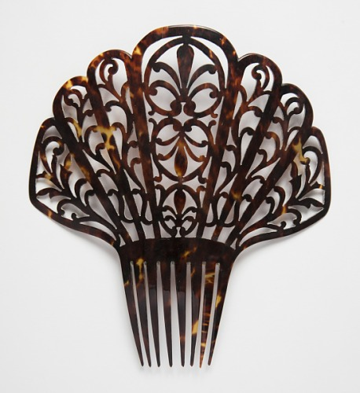

Natural plastics are substances found from a range of animals. The animal kingdom was the origional source of design material. The hide and bones from animals offered a plasticity quality to bend and be molded to form anything.
The natural materials we will discuss today are: tortoiseshell, ivory, and leather. These materials are sourced from turtles, elephants, and various mammals.
Natural plastics like these were very popular from the 1500s to the mid 20th century. We will explore the Cooper Hewitt's collection and see when and how these materials were being used. This will explore the ethics of natural material vs. synthetic materials.
Pair of Earings (1890)
Pair of pendant earings. Medium: carved tortoiseshell, gold. Dolf by Tinsel Trading Company.

Peineta Comb (19th Century)
Large comb with stylized flower and vine motifs. Medium: tortoiseshell. Made in Cuba.
Tortoiseshell
A semi-transparent, yellow and brown, shell of turtles, typically found in jewlery and ornaments
Pipe
Long carved stem with a circular mouthpiece. Medium: carved ivory. Made is USA.
Birdcage (1735)
Hanging birdcage with circular dome shape. Medium: lacquered wood with inlaid ivory and ebony base.
Ivory
A hard, white material from the tusks and teeth of animals such as elephants
Card Case (19th Century)
Envelope shaped case with embroidery in formal design with silver clasp. Medium: leather, metal. Made in Spain.
Shoes (1920)
Two-tone black and white short heels. Medium: leather. Designed by N. Greco.
Leather
A strong, felxible, and durable material obtained from the chemical treatment of animal skins and hides.
Use of Natural Plastic
1500-1549
1550-1599
1600-1649
1650-1699
1700-1749
1750-1799
1800-1849
1850-1899
1900-1949
1950-1999
tortoiseshell
ivory
leather
To keep up with the average consumer and industry demand, scientists developed "synthetic substitutes" in the late 19th century. This ultimatley led to the boom of inexpensive petroleum based plastics used today.
These plastics were produced in large quantities and now present environmental crisis in the modern day. While trying to solve one issue, there comes another, coming full circle.
Designers, manufactuers, and consumers are exploring natural materials. There is a movement to create renewable and biodegradable bioplastics. Is there really an ethical option when it comes to design materials?
Where did synthetic plastic come from?
Popularity of natural plastics led to the overconsumption of these materials and endagered the species that were being harvested.
Nike Victory Swim (2020)
Two Piece Pro Hijab Swimsuit. Medium: Nylon Lycra. Designed by Martha Moore, Ashley Lakovic, Tracy Murphy.
UNYQ Align (2016)
Scoliosis Brace Prototype. Medium: Nylon. Designed by Francis Bitonti, Studio Bitonti, Peter Wildfeuer, Li Chen.
Nylon
a silk-like thermoplastic made from petroleum that can be melt-processed into fibers, films, and shapes
Dress, Jacket, and Stole (2017)
Spring/Summer collection dress, jacket, and stole. Medium: Polyester blend, lace, net, sequins, pearl, glass beads. Designed by Saiqa Majeed.
Hankerchief (1985)
Side chair. Medium: Red Polyester mounted on black metal base. Designed by Massimo Vignelli, Lella Vignelli.
Polyester
a durable, lightweight, wrinkle-resistant fabric or textile made from synthetic, manmade materical scientifically called, "polyethylene terephthalate"
For Women Hair Brush (1999)
Hair brush. Medium: plastic. Designed by Eric P. Chan for Goody Products.
Patriot Radio (1940)
Radio. Medium: phenolic resin, urea plastic, cellulose acetate, metal. Designed by Norman Bel Geddes for Emerson Radio.
Plastic
a wide range of synthetic materials that can be moulded, extruded or pressed into objects and various shapes